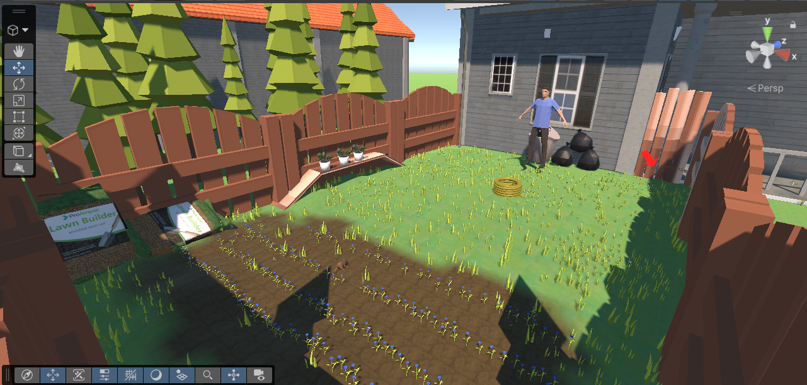
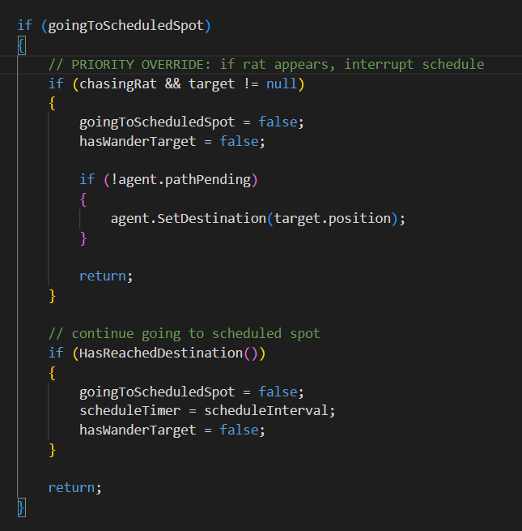
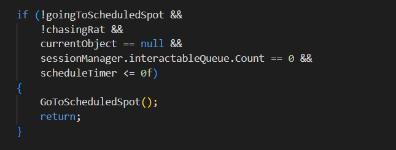
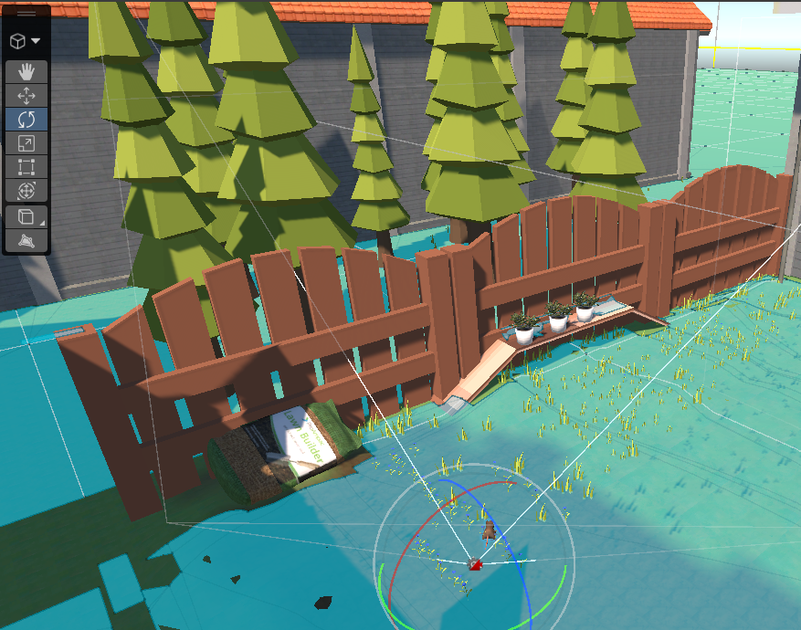
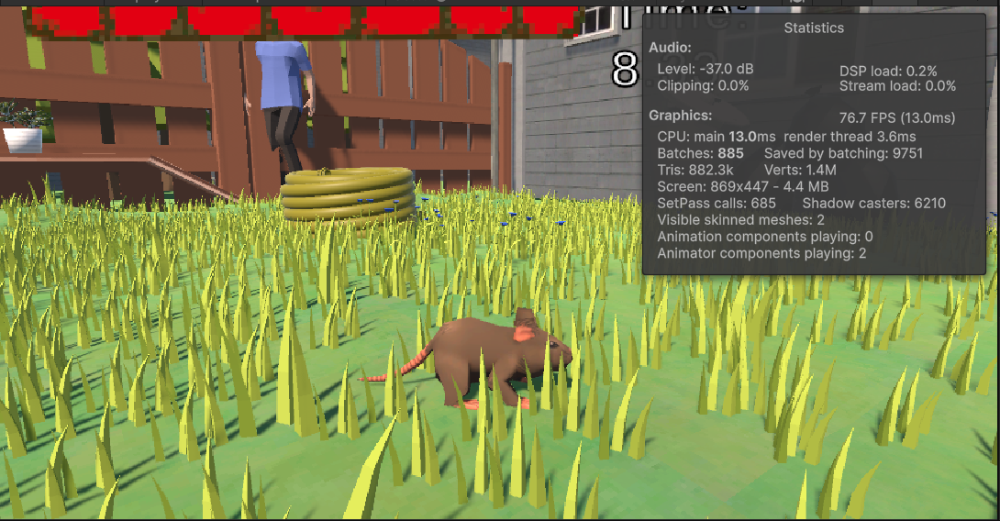
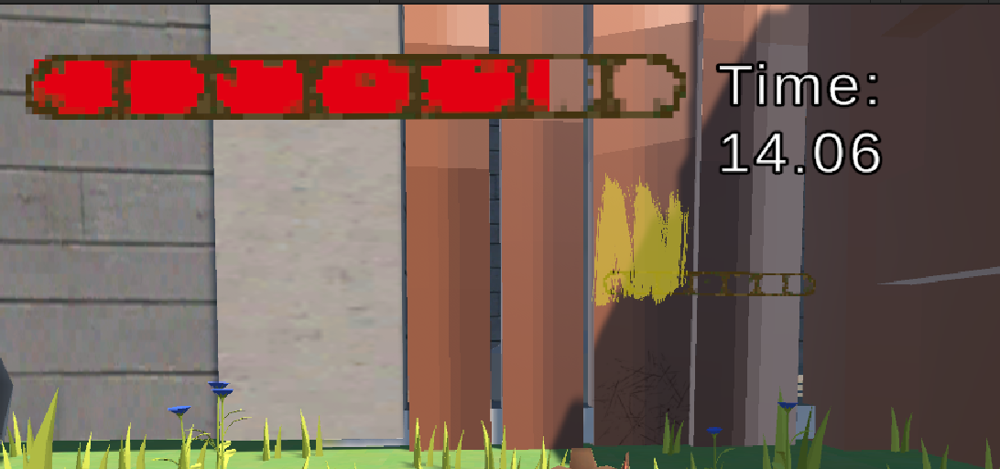

Miniature Mayhem is a stealth-survival game where the player controls a rat trapped inside a backyard garden. The objective is to escape by scratching through a weak fence panel while avoiding the Owner who patrols the area repairing destroyed objects. The player must use distractions and environmental interactions to create opportunities to escape without being stomped or caught.
The interactable objects in the game were designed using a reusable modular system. Each object contains a clean “before” state and a damaged “after” state. When the player interacts with an object, it swaps between these states using switch cases and object tags. The same system was also adapted for the escape fence and repair mechanics.
The Owner enemy uses Unity NavMesh pathfinding to patrol and chase the player. A FIFO queue system was implemented so the AI could prioritise repairing broken objects while still being able to interrupt tasks if the player was spotted.


In the expanded version of the project, I improved the enemy AI behaviour by adding scheduled patrol checks around the escape gate. This prevented the player from hiding in one place for the entire game and helped create more suspense during gameplay.
The player uses Unity’s input system alongside interaction prompts to break objects, distract the Owner, and progress towards the escape condition.
The game also includes a health system where repeated attacks from the Owner will eventually cause the player to lose and restart the level.
Optimization became a larger focus during development. The grass in the environment was created using terrain tree meshes which caused a high draw count and impacted performance heavily.
To improve performance, I reduced the density of these objects and implemented occlusion culling throughout the level. This reduced the amount of unnecessary rendering and helped the project run more smoothly overall.


The environment was originally built using Unity Terrain tools with slight elevation changes to avoid a flat appearance. Various textures and foliage assets were used to create a believable backyard setting.
Later in development, I experimented with converting sections of the environment into ProBuilder geometry to test a more modular workflow. If I revisited the project, I would likely prototype the environment fully in ProBuilder before finalising assets.
Audio was one of the weakest aspects of the original submission, so I focused on improving it in the expanded version. After learning about spatial blend in class, I implemented positional audio into several interactable objects including the sprinkler and hose.
The Owner’s footsteps were also converted to spatial audio and Unity’s Audio Mixer system was introduced to separate music, ambience, effects, and interactables into their own channels for better control and balancing.
The game already contained a custom-painted health bar and timer system, but I further improved player guidance by adding popup interaction prompts when approaching objects.
To direct players toward the escape gate, I replaced a large immersion-breaking red arrow with environmental “yellow paint” guidance inspired by techniques commonly used in modern games.

Throughout development I repeatedly playtested the project to identify bugs and polish issues. Small fixes such as correcting UI hierarchy problems helped improve the overall quality and presentation of the game.
I also allowed close friends to test the game without instruction. They were able to understand the objectives naturally which showed that the gameplay flow and player guidance systems were effective.
Several technical challenges were encountered during development. NavMesh obstacles had to be configured carefully to prevent the AI from colliding with interactable objects.
The rat model sourced online included a rig but lacked a run animation, so I created one manually using keyframes and direct bone manipulation. I also experimented with retargeting animations from another rig but was unsuccessful.
Another issue involved scene buttons not correctly interacting with my singleton GameManager system. This was resolved by creating intermediary scripts within each scene that communicated with the GameManager directly.
Gameplay demonstration of Miniature Mayhem.
This second video demonstrates some of the AI behaviour and interaction systems used throughout the project.
Gameplay demonstration of Miniature Mayhem.
Overall, Miniature Mayhem evolved significantly throughout development through improvements in AI behaviour, optimization, audio design, player feedback, and general polish.
The project helped strengthen my understanding of Unity systems including NavMesh, audio management, modular interaction systems, optimization techniques, and player experience design.
here are some links to the original version of the project and the expanded version of the project Design Document if you want to check them out.
Original Version
Expanded Version